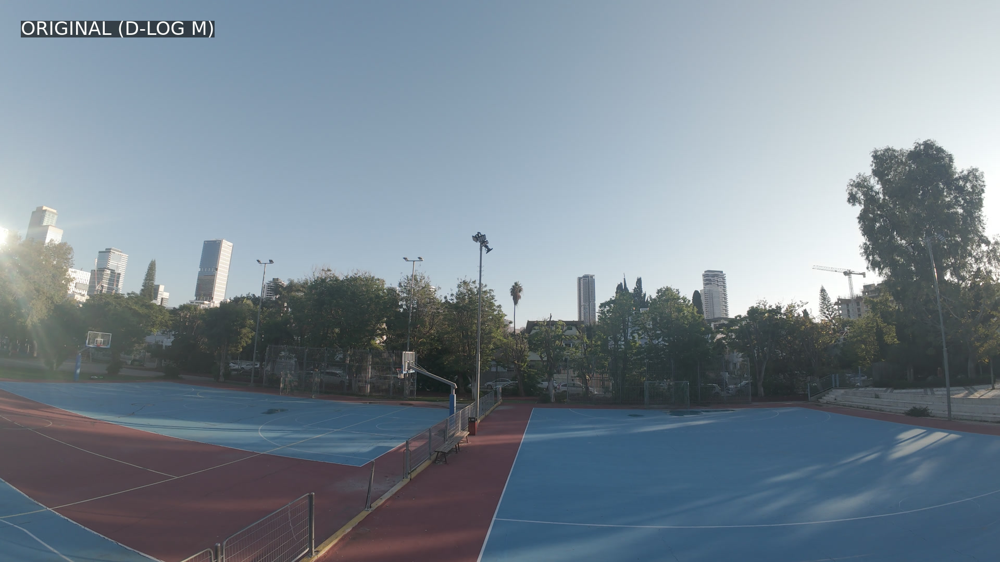
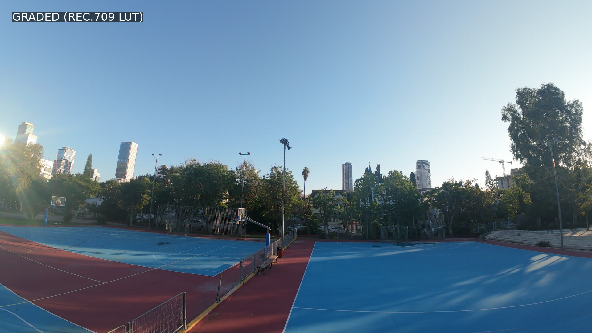
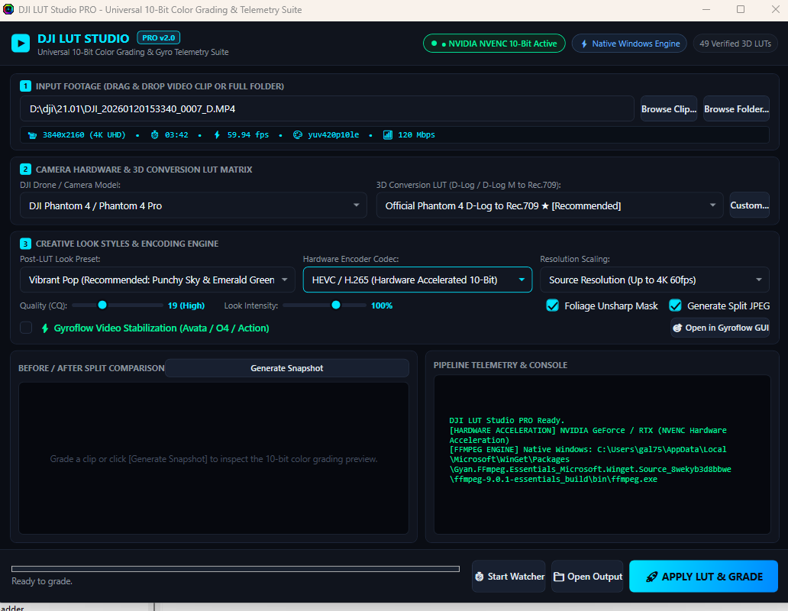

Transform flat 10-bit D-Log and D-Log M video from your DJI drones and action cameras into rich, color-accurate Rec.709 with tetrahedral interpolation, native Multi-GPU acceleration (NVIDIA NVENC, AMD AMF, Intel QSV), and automated Gyroflow camera telemetry stabilization.
Drag the interactive slider below to inspect the precision color mapping from washed-out 10-bit D-Log M into calibrated, high-dynamic-range Rec.709.

ORIGINAL (D-LOG M)
GRADED (REC.709)Every tool you need in a focused, high-DPI native dark interface designed to grade clips and batches without opening bloated NLEs.

Everything from hardware encoding to camera telemetry stabilization is pre-configured and automated under the hood.
No WSL, no Python virtual environments, and no terminal commands required. Run the standard Windows installer and enjoy a 100% native desktop application with bundled binaries.
Automatically detects your hardware on launch. Harnesses NVIDIA NVENC (10-bit P010LE), AMD AMF, and Intel Quick Sync Video for ultra-fast exports, with a universal multi-core CPU fallback.
Extracts raw gyro motion telemetry (djmd) from DJI Avata, Avata 2, O3, O4 Air Unit, and Osmo Action 4/5. Stabilizes camera motion with Gyroflow before color grading in one seamless flow.
Inspects camera metadata tags for RockSteady (EIS:RS) and HorizonSteady (EIS:HS). Disables redundant Gyroflow passes with clear advisory banners to prevent sync errors.
Official tetrahedral 3D conversion LUTs for all DJI drone series (Mavic, Air, Mini, O4, Avata), Osmo Action, Pocket series, Zenmuse, and artistic film looks (Vibrant, 35mm, Golden Hour, Teal/Orange).
Examines video container metadata and filename conventions. Accurately identifies your specific camera (such as DJI O4 Pro Air Unit vs Phantom) and pre-selects the recommended conversion LUT.
Every export automatically outputs a high-resolution split comparison JPEG (_preview.jpg) showing original D-Log next to graded Rec.709 for fast visual verification.
Offload your drone SD card into an incoming folder on your PC. DJI LUT Studio detects new clips in real time and automatically grades them into your destination directory in the background.
Search or filter across all 20+ DJI camera models and 49 conversion and artistic LUTs verified in the official catalog.
Skip manual node setups and LUT folder hunting in heavy video suites.
Drag single video files or an entire folder of DJI D-Log / D-Log M recordings directly onto the desktop application.
The engine reads encoder tags, matches the drone profile, assigns the official 3D LUT, and verifies whether Gyroflow is needed.
Click Apply LUT & Grade. Your GPU renders broadcast Rec.709 with tetrahedral interpolation and outputs a split comparison preview.
Single-click self-contained setup. Bundles the native desktop GUI, multi-GPU hardware accelerated FFmpeg 7.x, and all 49 verified 3D LUTs. Zero WSL or Python setup needed.
Direct link not starting? View release page on GitHub
f65ed310550c7e6df20ae4789bd747254574d99b71064caa499e62b6174e2c8b
DJI_LUT_Studio.exe)
DJI_LUT_Studio_Setup_v2.0.0.exe above.
DJI LUT Studio probes your system configuration on launch and assigns the optimal hardware encoder automatically.
| GPU Vendor / Family | Encoder Engine | Codec Flag | 10-Bit Color Support | Performance Status |
|---|---|---|---|---|
| NVIDIA GeForce GTX / RTX / Quadro | NVIDIA NVENC | -c:v hevc_nvenc |
✔ Full 10-bit P010LE | Ultra-Fast (Up to 10x real-time on RTX 3070+) |
| AMD Radeon RX / Vega / RDNA | AMD AMF | -c:v hevc_amf |
✔ Full 10-bit VCN | Hardware Accelerated native AMD pipeline |
| Intel Arc & Core i5 / i7 / i9 (Iris Xe) | Intel QuickSync Video | -c:v hevc_qsv |
✔ Full 10-bit QSV | Hardware Accelerated QuickSync pipeline |
| Any PC (Universal Fallback) | Multi-Core CPU | -c:v libx265 |
✔ Full 10-bit yuv420p10le | Pruned multi-threaded CPU software rendering |
Everything you need to know about installation, compatibility, and workflow.
No! DJI LUT Studio is a completely standalone application. It handles ingestion, telemetry reading, stabilization, 3D LUT tetrahedral interpolation, and hardware-accelerated video export independently.
No. Starting in version 2.0.0, the Windows installer bundles the native desktop executable, static multi-GPU FFmpeg binaries, and all 49 LUTs. Simply download the installer and run it.
Yes! In the desktop interface, simply click the Browse button next to the "Custom LUT" field to load any third-party 3D LUT (.cube file) from your disk.
Drones like the DJI Avata, Avata 2, O3, O4 Air Unit, and Osmo Action cameras embed raw gyroscope data (djmd) inside video files. DJI LUT Studio bridges with Gyroflow to stabilize footage using real telemetry before applying color grading.
If in-camera RockSteady (EIS:RS) was enabled while shooting, raw gyro telemetry was suppressed by the camera firmware. DJI LUT Studio detects this automatically, shows an informative amber advisory banner, and disables the Gyroflow checkbox to prevent failed passes.
Yes, the application is licensed under the permissive MIT open-source license. The code is publicly available on GitHub for the creator community to inspect, customize, and extend.